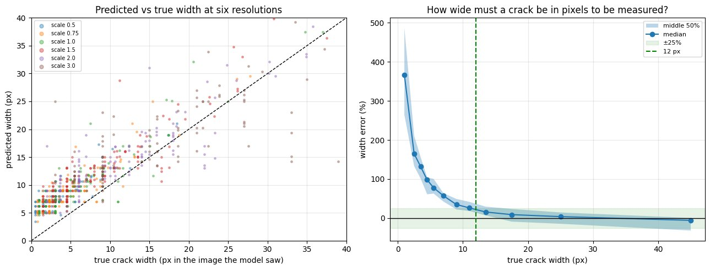
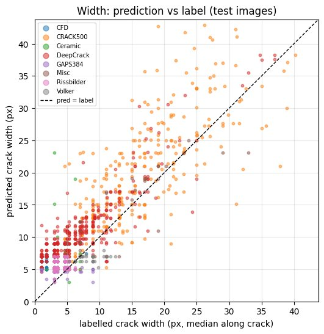

Back to all work
Measuring concrete crack width from photographs
Design codes judge cracks by width (Eurocode 2 recommends about 0.3 mm). So instead of asking only whether a model finds cracks, I asked whether it can measure them well enough for an inspector.
0.74Dice on held-out photos (95% CI 0.71–0.77)
0.77Dice on an unseen concrete dataset
79%test photos leaking into training in the official split
12 pxminimum crack width for ±25% accuracy
The problem
Crack segmentation papers usually report overlap scores. Inspectors need widths in millimetres, and a model that draws every crack a few pixels too wide can score well while being useless for that.
What I did
- Traced the 9,159 images of CrackSeg9k back to about 1,635 original photographs, and found that 79% of the official test photos have crops in the training set. Re-split by original photograph.
- Trained a U-Net with a ResNet-34 encoder, and tested on held-out photos and on three datasets never used in training (concrete, asphalt, tiles).
- Converted predicted outlines into crack length and width, compared against the labels, and simulated camera distance by resizing to find where width becomes reliable.
Results


Limitations
- Thin cracks are always drawn 2–4 px too wide, so width is reliable only above about 12 px: about 7 cm from the wall with a 12 MP phone camera, for a 0.3 mm crack.
- The model does not transfer to new materials: Dice 0.60 on asphalt and 0.29 on ceramic tiles.
- Width 'truth' is the dataset labels, whose style varies by source. Field validation with hand-measured cracks is in progress.